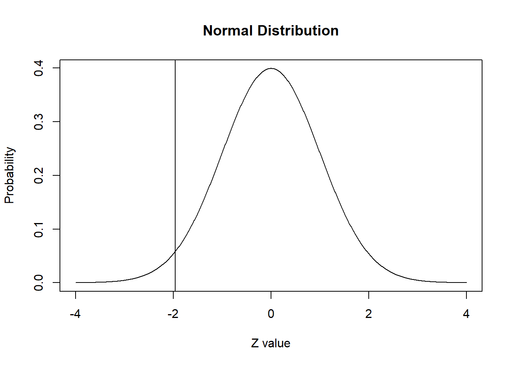

x.values <- seq(-4,4, length = 1000)
y.values <- dnorm(x.values)
plot(x.values, y.values, type="l", xlab="Z value", ylab="Probability", main="Normal Distribution")Práctico 4. Inferencia
Metodología Cuantitativa Avanzada - Magíster en Ciencias Sociales
Objetivo de la práctica
El objetivo de esta guía práctica es, primero, introducirnos en la inferencia estadística, revisando los conceptos y aplicaciones de la curva normal y las probabilidades bajo esta con puntajes Z. Segundo, revisar algunos de sus conceptos clave como distribución muestral, error estándar, y la definición y aplicaciones de los intervalos de confianza. Y tercero, contraste de hipótesis de diferencia de medias y proporciones.
En detalle, aprenderemos:
- Qué es la inferencia estadística.
- Qué es la distribución normal y cómo interpretarla.
- Cómo calcular probabilidades asociadas con valores Z en R.
- Qué es una distribución muestral.
- Qué es el error estándar.
- Qué son y cómo calcular intervalos de conafianza.
- Test de hipótesis para diferencia de medias
- Test de hipótesis para diferencia de proporciones
¿Qué es la inferencia estadística?
En estadística, llamamos inferencia al ejercicio de extrapolar determinadas estimaciones (estadístico) de una muestra a una población más grande (parámetro). En concreto, es el proceso de realizar conclusiones o predicciones sobre una población a partir de una muestra o subconjunto de esa población.

Un concepto central en todo esto es la probabilidad de error, es decir, en qué medida nos estamos equivocando (o estamos dispuestos a estar equivocados) en tratar de extrapolar una estimación muestral a la población.
Distribución normal
Nota
Recordemos que por distribución nos referimos al conjunto de todos los valores posibles de una variable y las frecuencias (o probabilidades) con las que se producen.
Existen distribuciones empíricas y distribuciones teóricas, en donde:
- las primeras reflejan la distribución de los valores que asume la variable en un grupo concreto a partir de una observación.
- las segundas son una función matématica que expresan la distribución de un conjunto de números mediante su probabilidad de ocurencia.
Para empezar, veamos una de las distribuciones teóricas más conocidas: la distribución normal estándar. La distribución normal estándar:
- es una distribución normal con una media de 0 y una desviación estándar de 1.
- simétricas y con un solo punto de elevación
- la media se sitúa al centro, y la desviación estandar expresa su dispersión
- la pendiente es más fuerte cerca del centro, y se suaviza hacia los extremos
- los puntos en los que tiene lugar este cambio de curvatura se hallan a una distancia σ, a ambos lados de la media µ.
Con R es posible generar un conjunto de datos simulados con una distribución normal.
¿Qué estamos haciendo en cada una de las 3 líneas de código? ¿Qué variables se crearon y cómo nos aseguramos de que los datos generados siguieran una distribución normal? Pensemos un poco…
Ahora podemos preguntar qué parte de la curva cae por debajo de un valor particular. Por ejemplo, preguntaremos sobre el valor 0 antes de ejecutar el código. Piense ¿cuál debería ser la respuesta?
pnorm(q = 0)[1] 0.5Tenemos que la probabilidad (en una curva normal estándar) de obtener un valor igual o menor a 0 es de 0.5, es decir, del 50%, pero ¿por qué?
Porque como la distribución normal es simétrica alrededor de cero, la probabilidad de que sea menor o igual a cero es 0.5, es decir, el 50% de la distribución está por debajo de cero y el otro 50% está por encima de cero.

Esto es posible mediante la relación entre las áreas bajo la curva normal y las probabilidades.
Probabilidades asociadas con valores z
Nota
La puntuación Z es una medida que se utiliza para expresar la posición relativa de un valor con respecto a la media en una distribución normal. La puntuación Z mide cuántas desviaciones estándar está un valor por encima o por debajo de la media.
En los ejemplos siguientes, usaremos valores Z de + 1,96 y -1,96 porque sabemos que estos valores aproximados marcan el 2,5% superior e inferior de la distribución normal estándar. Esto corresponde a un alfa típico = 0,05 para una prueba de hipótesis de dos colas (sobre la cual aprenderemos más en las próximas semanas).
pnorm(q = 1.96, lower.tail=TRUE)[1] 0.9750021La respuesta nos dice lo que ya sabemos: el 97,5% de la distribución normal ocurre por debajo del valor z de 1,96.
Podemos agregar una línea al gráfico para mostrar dónde se usaría abline.
El 97,5% de la distribución queda por debajo de esta línea.
plot(x.values, y.values, type="l", lty=1, xlab="Z value", ylab="Probability", main="Normal Distribution") +
abline(v = 1.96)integer(0)¿Y si lo hacemos hacia la cola izquierda o inferior de la distribución?
pnorm(q = -1.96, lower.tail = TRUE)[1] 0.0249979Tenemos que, hacia el extremo inferior de la distribución, el valor z -1,96 marca el 2,5% inferior de la distribución normal estándar.
plot(x.values, y.values, type="l", lty=1, xlab="Z value", ylab="Probability", main="Normal Distribution") +
abline(v = -1.96)
integer(0)Ejercicio 1
Utilice la función abline() para agregar líneas en el puntaje z apropiado para demostrar el clásico 68-95-99.7 de esta curva normal estándar.
plot(x.values, y.values, type="l", lty=1, xlab="Z value", ylab="Probability", main="Normal Distribution") +
abline(v = 1) +
abline(v = -1) +
abline(v = 2) +
abline(v = -2) +
abline(v = 3) +
abline(v = -3)integer(0)Como se discutió en clases, también podemos hacer lo contrario: decidir primero cuánta probabilidad queremos (percentil) y luego calcular qué valores críticos están asociados con esas probabilidades. Esto utiliza la función qnorm. Si queremos saber qué valor z marca la probabilidad p del 2,5% inferior de una distribución normal estándar, usaríamos:
qnorm(p = 0.025)[1] -1.959964Esto nos dice que el valor z de -1,96 marca el 2,5% inferior de la distribución normal estándar. Para determinar el valor z que marca el 2,5% superior de la distribución, escribo:
qnorm(p = 0.975)[1] 1.959964Ejercicio 2
Hasta ahora hemos demostrado todo con una distribución normal estándar. Pero la mayoría de las curvas normales no son normales estándar.
Genere una curva (como hicimos anteriormente para la distribución normal estándar) y trácela con una media de 20 y una desviación estándar de 1,65.
x.values <- seq(10,30, length = 1000)
y.values <- dnorm(x.values, mean = 20, sd = 1.65) # indico media y sd
plot(x.values, y.values, type="l", lty=1, xlab="Z value", ylab="Probability", main="Normal Distribution")Ahora, identifique el valor en el que el 97,5% de la distribución cae por debajo de este valor. Esto lo hicimos antes con qnorm.
qnorm(p = .975, mean = 20, sd = 1.65)[1] 23.23394Tenemos que el 97,5% de los valores estarán por debajo de 23,2.
Ejercicio de aplicación
Ahora que hemos generado distribuciones normales, echemos un vistazo a algunos datos y compárelos con la distribución normal. Utilizaremos un conjunto de datos desde internet, con mediciones de 247 hombres y 260 mujeres, la mayoría de los cuales eran considerados adultos jóvenes sanos.P uede encontrar una clave para los nombres de las variables aquí, pero nos centraremos en solo tres columnas: peso en kg (wgt), altura en cm (hgt) y sexo (1 = hombre; 0 = mujer).
load(url("http://www.openintro.org/stat/data/bdims.RData"))Separemos estos datos en dos conjuntos, uno de hombres y otro de mujeres con la función subset
mdims <- subset(bdims, sex == 1)
fdims <- subset(bdims, sex == 0)Ejercicio 1
Haz un histograma de la altura de los hombres y un histograma de la altura de las mujeres. ¿Cómo compararía los diversos aspectos de las dos distribuciones?
hist(mdims$hgt, xlim = c(150,200))hist(fdims$hgt, xlim = c(140,190))Ejercicio 2
scale es una función en R y se puede aplicar a cualquier vector numérico (lista de números en R). Genere los dos histogramas siguientes, esta vez graficando scale() de las estaturas y determine cómo la versión escalada de las alturas corresponde a las alturas originales. ¿Qué calcula la escala para cada punto?
hist(scale(mdims$hgt))hist(scale(fdims$hgt))Ejercicio 3
Nos gustaría comparar la distribución de estaturas en este conjunto de datos con la distribución normal. Para cada uno de los histogramas de alturas (sin escalar), trace una curva normal en la parte superior del histograma.
Calcule la media y la desviación estándar para las alturas femeninas y guárdelas como variables,
fhgtmeanyfhgtsd, respectivamente.Determine la lista de valores de x (el rango del eje X) y guarde este vector. Puede hacer fácilmente una lista de números usando la función
seq()como lo hemos hecho antes, o teniendo el límite inferior:límite superior. Por ejemplo, para generar un vector (lista de números) del 1 al 10 y guardarlo como one_ten, usaría one_ten <- 1:10.Como arriba, use
dnorm()para tomar la lista de valores de x y encontrar el valor de y correspondiente si fuera una distribución normal perfecta. Guarde este vector como la variable y.Vuelva a trazar su histograma y luego, en la siguiente línea, use
lines(x = x, y = y, col = "blue")para dibujar una distribución normal encima.
fhgtmean <- mean(fdims$hgt)
fhgtsd <- sd(fdims$hgt)
hist(fdims$hgt, probability = TRUE, ylim = c(0, .07))
x <- 140:190
y <- dnorm(x = x, mean = fhgtmean, sd = fhgtsd)
lines(x = x, y = y, col = "blue")Según este gráfico, ¿parece que los datos siguen una distribución casi normal? Haz lo mismo con las estaturas masculinas.
Respuesta: En general, sí, consideraría que estos valores siguen una distribución casi normal ya que el histograma se ajusta bastante bien a la curva.
Observe que la forma del histograma es una forma de determinar si los datos parecen estar distribuidos casi normalmente, pero puede resultar frustrante decidir qué tan cerca está el histograma de la curva. Un enfoque alternativo implica construir una gráfica de probabilidad normal, también llamada gráfica Q-Q por “quantil-quantil”. Ejecute ambas líneas juntas.
qqnorm(fdims$hgt)
qqline(fdims$hgt)Un QQ plot nos muestra en el eje x los cuantiles teóricos de la distribución en términos de desviaciones estandar, y en el eje y los valores de la variable. La distribución de los puntos en una línea recta es una indicación de que los datos se distribuyen normalmente.
Veamos otro ejemplo de otra variable de la base de datos:
hist(fdims$che.de)qqnorm(fdims$che.de)
qqline(fdims$che.de)Una vez que decidimos que una variable se distribuyte de forma normal, podemos responder todo tipo de preguntas sobre esa variable relacionadas con la probabilidad. Tomemos, por ejemplo, la pregunta: “¿Cuál es la probabilidad de que una mujer adulta joven elegida al azar mida más 182 cm?”
Si suponemos que las alturas de las mujeres se distribuyen normalmente (una aproximación muy cercana también está bien), podemos encontrar esta probabilidad calculando una puntuación Z y consultando una tabla Z (también llamada tabla de probabilidad normal).
En R, esto se hace en un solo paso con la función pnorm (como hicimos anteriormente para la distribución normal estándar).
pnorm(q = 182, mean = fhgtmean, sd = fhgtsd)[1] 0.9955656Obtenemos la proporción de mujeres que está bajo esa estatura, es decir 99,6%. Si queremos saber la proporción de mujeres que está sobre esa estatura:
1 - pnorm(q = 182, mean = fhgtmean, sd = fhgtsd)[1] 0.004434387En este caso, el 0,4% de las mujeres se encontraría sobre esa estatura.
Podemos también hacer la operación inversa, es decir, a qué valor (estatura) corresponde un porcentaje o probabilidad basada en una distribución normal. Para ello utilizamos la función qnorm. Por ejemplo, para la probabilidad que calculamos más arriba para una altura de 182cm en las mujeres:
qnorm(.9955656, fhgtmean, fhgtsd)[1] 182Distribución muestral
Nota
Variabilidad muestral: el valor de un estadístico varía en un muestreo aleatorio repetido.
La distribución muestral es la distribución de las estimaciones, o estadísticos como la media o proporción, tomadas de múltiples muestras aleatorias de una población. Permite comprender cómo varían las estimaciones de una muestra a otra.
Ejemplo 1: Imaginemos que tenemos una población de niñ_s de 0 a 9 años, y tomamos múltiples muestras de 6 individu_s (n=6). Cada una de las muestras tendrá un promedio (estadístico muestral, en este caso \(\bar{x}\)) diferente, que no necesariamente coincidirn con el promedio de la población (parámetro, en este caso \(\mu_{x}\))

Ejemplo 2: Si usamos valores simulados, podemos ver que todas las medias obtenidas en cada muesta son distintas.
set.seed(100) # Establecer semilla
muestras <- replicate(100, mean(rnorm(30, mean = 50, sd = 10))) # 100 muestras de tamaño 30
muestras [1] 50.28864 50.92574 49.56125 49.25099 48.40735 51.67506 49.28325 48.90829
[9] 50.64635 51.94797 49.68514 49.00100 49.87287 47.58167 50.91109 47.61967
[17] 47.94270 52.20491 51.38777 50.76559 49.02265 49.16394 50.59675 51.40631
[25] 50.28247 51.94561 50.39929 51.95632 55.25584 51.26112 49.02810 46.46643
[33] 52.21139 49.48146 50.43067 52.84081 47.97451 46.55278 49.87576 50.88025
[41] 50.78748 49.42165 50.46664 51.06194 49.94867 48.39219 49.79581 49.82214
[49] 49.93791 49.16883 52.24256 51.46923 46.51443 50.23611 49.87410 50.87291
[57] 52.32911 46.21546 47.26934 51.29019 50.49509 49.63433 53.25368 50.81717
[65] 49.45387 49.61571 50.33774 47.02089 47.94071 50.16296 51.12409 50.68963
[73] 50.32398 52.22186 49.95585 50.74844 48.08507 52.90382 51.43478 46.74822
[81] 49.21148 51.83738 49.66936 49.32308 50.31842 46.47797 50.64338 50.01220
[89] 52.26135 47.49504 49.93140 53.04953 49.59253 48.83580 49.57802 49.23299
[97] 50.32517 50.82952 48.92960 49.47553Si tengo la desviación estándar de los promedios, puedo construir un intervalo de probabilidad, basado en la curva normal.
Nota
Una característica importante es que se asume que las muestras tomadas de la población son aleatorias y representativas, lo que es esencial para que la distribución muestral refleje adecuadamente la variabilidad de las estimaciones.
La importancia de la distribución muestral es que nos permitirá estimar parámetros poblacionales a partir de estadísticos muestrales, construir intervalos de confianza, y realizar pruebas de hipótesis.
Error estándar
El error estándar es una medida de la variabilidad de una estimación, proporciona una medida de cuán precisas son nuestras estimaciones de la población. El error estándar del promedio corresponde a una estimación de la desviación estándar de los promedios extraídos de distintas muestras.
Consideremos a cada punto una observación para la muestra roja, con la línea vertical como la media y la línea horizontal como la desviación estándar.

Luego, lo mismo para cada una de las muestras verde, lila, naranja y negra.

Lo que tendremos es que cada promedio de cada muestra es un valor que podemos promediar, y tienen su propia desviación estándar a su propio promedio. Luego, a esa desviación estándar de los promedios de cada muestra al promedio general, la llamaremos error estándar.

Nota
Teorema del límite central la distribución de los promedios de distintas muestras - o distribución muestral del promedio - se aproxima a una distribución normal.
Basados en el teorema del límite central, es posible calcular la desviación estándar del promedio (error estándar) con una sola muestra:
\[\sigma_{\bar{X}}=SE(error estándar)=\frac{s}{\sqrt{N}}\]
# Generar una muestra de datos
set.seed(123) # Establecer semilla
muestra <- rnorm(100, mean = 50, sd = 10) # Muestra de tamaño 100, media 50, desviación estándar 10
# Calcular el error estándar
error_estandar <- sd(muestra) / sqrt(length(muestra))
error_estandar[1] 0.9128159La importancia del error estándar es que nos permitirá construir intervalos de confianza, y realizar pruebas de hipótesis.
Intervalos de confianza
Un intervalo de confianza es un rango dentro del cual es probable que se encuentre un parámetro poblacional con un nivel de confianza específico. Además, proporciona información sobre la precisión de nuestras estimaciones.
Por ejemplo,
# Calcular un intervalo de confianza para la media
intervalo_confianza <- t.test(muestra)$conf.int # Intervalo de confianza del 95% para la media
intervalo_confianza[1] 49.09283 52.71528
attr(,"conf.level")
[1] 0.95El promedio de la muestra \(\bar{x}\) se distruye normal, con un error estándar \(SE\), lo que nos permite estimar probabilidades basándonos en la curva normal.
Por ejemplo, si nos desviamos \(\pm1.96SE\) desde la media abarcaremos aproximadamente el 95% de los valores probables.

Nota
Nivel de confianza: Corresponde a la probabilidad de que la muestra elegida produzca un intervalo que incluya el parámetro que se está estimando (\(1-\alpha\)).
Nivel de significacncia: Corresponde a la probabilidad de que el intervalo calculado a partir de la muestra no comprenda el parámetro de la población (\(\alpha\)).
Cálculo de intervalos de confianza
Ahora ¡Manos a la obra!
Calculemos intervalos de confianza. Primero, carguemos las librerías necesarias:
library(pacman)Warning: package 'pacman' was built under R version 4.3.3pacman::p_load(tidyverse, # colección de paquetes para manipulación de datos
car, # para recodificar
psych, # para analizar datos
sjmisc, # para analizar datos
srvyr, # para estimación de IC y ponderadores
Publish) # para IC
options(scipen = 999) # para desactivar notacion cientifica
rm(list = ls()) # para limpiar el entorno de trabajoy también carguemos la base de datos que utilizaremos, que corresponde a un subset de la Encuesta Suplementaria de ingresos ESI para ocupados:
load(url("https://github.com/cursos-metodos-facso/datos-ejemplos/raw/main/esi-2021-ocupados.rdata"))
Nota
Recordemos que podemos contar con bases de datos que tengan factor de expansión (ponderador) o no. Esta distinción se presenta cuando trabajamos con muestras simples o complejas. Al trabajar con muestras complejas debemos identificar cuál es la variable del ponderador e incorporarla en nuestro cálculo, como veremos a continuación.
Intervalos de confianza sin ponderador
Podemos calcular intervalos de confianza con muestras representativas sin ponderadores o factores de expansión. Supongamos que es el caso.
IC para Medias
Calculemos un intervalo de confianza para la media de ingresos de personas ocupadas:
psych::describe(esi$ing_t_p) vars n mean sd median trimmed mad min max
X1 1 37124 586360.4 697362.9 405347.7 474473.1 255411.6 0 38206253
range skew kurtosis se
X1 38206253 12 402.32 3619.36Publish::ci.mean(esi$ing_t_p, alpha = 0.05) mean CI-95%
586360.41 [579266.37;593454.45]Al no aplicar factores de expansión, contamos con una media de ingresos de $586.360 como estimación puntual. Pero también podemos decir que con un 95% de confianza el parámetro poblacional se encontrará entre $579.266 y $593.454.
IC para Proporciones
Para calcular un intervalo de confianza para la proporción por la variable sexo, usamos:
sjmisc::frq(esi$sexo)x <numeric>
# total N=37124 valid N=37124 mean=1.44 sd=0.50
Value | N | Raw % | Valid % | Cum. %
----------------------------------------
1 | 20806 | 56.04 | 56.04 | 56.04
2 | 16318 | 43.96 | 43.96 | 100.00
<NA> | 0 | 0.00 | <NA> | <NA>prop.test(x = 20806, n = 37124, conf.level = 0.95)
1-sample proportions test with continuity correction
data: 20806 out of 37124, null probability 0.5
X-squared = 542.32, df = 1, p-value < 0.00000000000000022
alternative hypothesis: true p is not equal to 0.5
95 percent confidence interval:
0.5553777 0.5655019
sample estimates:
p
0.5604461 En este caso, sabemos que el total de las personas ocupadas de la muestra son n=37.124, y que la cantidad de hombres son 20.806, correspondientes al 56% como estimación puntual. También podemos sostener con un 95% que la proporción de hombres en la población se encuentra entre 55.54% y 56.6%.
Intervalos de confianza con ponderador
Para muestras complejas que cuentan con ponderador (o factor de expansión) también podemos hacer este ejercicio.
Primero, es necesario identificar la variable de factor de expansión o ponderador:
esi_pond <- esi %>% as_survey_design(ids = 1, # indica conglomerados de muestreo; ~0 o ~1 cuando no hay
strata = estrato, # indica efecto de diseño muestral
weights = fact_cal_esi) # indica el ponderador
options(survey.lonely.psu = "certainty") # seteamos para que ids no molesteIC para Medias
Ahora, teniendo en consideración el factor de expansión, podemos señalar que:
esi_pond %>%
summarise(media = survey_mean(ing_t_p, vartype = "ci", levels = 0.95, na.rm=TRUE)) # usamos funcion survey_mean# A tibble: 1 × 3
media media_low media_upp
<dbl> <dbl> <dbl>
1 681039. 666563. 695516.El promedio de ingresos de personas ocupadas ponderado en la población corresponde a $681.039 como estimación puntual, pero que es posible afirmar con un 95% de confianza que el parámetro poblacional se encuentra entre $666.562 y $695.516.
IC para Proporciones
Finalmente, si calculamos la proporción de hombres ocupados en la población considerando el factor de expansión:
sjmisc::frq(esi$sexo)x <numeric>
# total N=37124 valid N=37124 mean=1.44 sd=0.50
Value | N | Raw % | Valid % | Cum. %
----------------------------------------
1 | 20806 | 56.04 | 56.04 | 56.04
2 | 16318 | 43.96 | 43.96 | 100.00
<NA> | 0 | 0.00 | <NA> | <NA>esi_pond %>%
group_by(sexo) %>% # agrupamos por sexo
summarise(prop = survey_prop(vartype = "ci", levels = 0.95, na.rm = TRUE))# A tibble: 2 × 4
sexo prop prop_low prop_upp
<dbl> <dbl> <dbl> <dbl>
1 1 0.582 0.575 0.590
2 2 0.418 0.410 0.425Tenemos que, con un 95% de conafianza, podemos afirmar que la proporción de hombre ocupados se encuentra entre el 57% y 58%.
Test de hipótesis para diferencia de medias
Primero, carguemos las librerías necesarias:
library(pacman)
pacman::p_load(tidyverse, # colección de paquetes para manipulación de datos
car, # para recodificar
psych, # para analizar datos
sjmisc, # para analizar datos
# srvyr, # para estimación de IC y ponderadores
# Publish, # para IC
kableExtra) # para presentación de tablas
options(scipen = 999) # para desactivar notacion cientifica
rm(list = ls()) # para limpiar el entorno de trabajoVamos a testear la siguiente hipótesis:
- \(H_a\): existen diferencias de edad entre hombres y mujeres
Y su correspondiente hipótesis nula:
- \(H_0\): no existen diferencias de edad entre hombres y mujeres
Generación de datos (muestra_3) y descriptivos:
muestra_3 <- data.frame(edad=c(33,35,23,32,24,25,29,31,32,31),
sexo=c(1,1,2,1,2,2,2,1,1,1))
mean(muestra_3$edad)[1] 29.5muestra_3$sexo <- as.factor(muestra_3$sexo)
muestra_3 %>%
group_by(sexo) %>%
summarise(media=mean(edad)) # A tibble: 2 × 2
sexo media
<fct> <dbl>
1 1 32.3
2 2 25.2Gráfico descriptivo:
muestra_3 %>%
group_by(sexo) %>%
summarise(media=mean(edad)) %>%
ggplot(aes(x=sexo, y=media)) +
geom_point() +
ylim(25,35) +
labs(title = "Medias de edad para hombres y mujeres, muestra 3",
x = "Sexo",
y = "Media edad")Prueba t de diferencia de medias:
t.test(edad ~ sexo,data=muestra_3)
Welch Two Sample t-test
data: edad by sexo
t = 4.8799, df = 4.33, p-value = 0.006658
alternative hypothesis: true difference in means between group 1 and group 2 is not equal to 0
95 percent confidence interval:
3.171534 10.995133
sample estimates:
mean in group 1 mean in group 2
32.33333 25.25000 Lo principal en este output es el valor p, que es la probabilidad de error de rechazar la hipótesis nula. En este caso, \(p = 0.006658\), que es menor a un nivel de confianza convencional como \(\alpha = 0.05\), incluso es menor que un nivel más exigente como el \(\alpha = 0.01\). Por lo tanto, rechazamos la hipótesis nula de igualdad de medias con un 99% de confianza, hay suficiente evidencia estadística para sostener que el promedio de edad de hombres y mujeres es diferente.
Cálculo paso a paso de estadístico t
En esta última sección se realizará el cálculo paso a paso del estadístico \(t\) del ejemplo anterior para demostrar cómo se origina la información que aparece en el output de R.
Recordemos la fórmula de t:
\(t=\frac{(\bar{x}_1-\bar{x}_2)}{\sqrt{\frac{s_1²}{\sqrt{n_1}}+\frac{s_2²}{\sqrt{n_2}} }}\)
Donde en la parte superior se encuentra la diferencia de medias entre dos grupos, y en la inferior el error estándar de t.
Pasos:
- Se calcula la diferencia de medias
- Se calcula el error estándar de la diferencia de medias
- Cálculo del valor t
- Se fija un \(\alpha\) (usualmente 0.05) para rechazar \(H_0\), y se busca el valor crítico asociado a este \(\alpha\) (en una tabla de valores t, o en R)
- Si nuestro t es superior al valor crítico, se rechaza \(H_0\)
Paso 1: Calculamos la diferencia de medias \((\bar{x}_1-\bar{x}_2)\)
muestra_3 %>%
dplyr::group_by(sexo=sjlabelled::as_label(sexo)) %>% # se agrupan por la variable categórica y se usan sus etiquetas con as_label
dplyr::summarise(Obs.=n(),Promedio=mean(edad, na.rm=TRUE),SD=sd(edad, na.rm=TRUE)) %>% # se agregan las operaciones a presentar en la tabla
kable(format = "markdown")| sexo | Obs. | Promedio | SD |
|---|---|---|---|
| 1 | 6 | 32.33333 | 1.505545 |
| 2 | 4 | 25.25000 | 2.629956 |
dif_medias <- 32.333 - 25.250
dif_medias[1] 7.083Paso 2: Calculamos el error estándar de la diferencia de medias: \(\sqrt{\frac{s_1²}{\sqrt{n_1}}+\frac{s_2²}{\sqrt{n_2}}}\)
muestra_3h <- muestra_3 %>% filter(sexo==1)
muestra_3m <- muestra_3 %>% filter(sexo==2)
s_h <- sd(muestra_3h$edad)
n_h <- length(muestra_3h$edad)
s_m <- sd(muestra_3m$edad)
n_m <- length(muestra_3m$edad)
ee <- sqrt((s_h^2)/n_h + (s_m^2)/n_m)
ee[1] 1.451532Paso 3: Cálculo del valor t
te <- dif_medias/ee
te[1] 4.879673Paso 4: Fijamos un \(\alpha\) y se busca el valor crítico de t asociado al \(\alpha\). En este caso utilizaremos el valor usual de \(\alpha = 0.05\).
tt <- qt(0.05/2,df=9,lower.tail = F)
tt[1] 2.262157Paso 5: test de hipótesis
Según la distribución t, el valor crítico para poder rechazar \(H_0\) con un 95% de confianza es 2.26. El t calculado con información de la muestra (o t empírico) es 4.87. Este valor es superior al t crítico, por lo tanto se rechaza \(H_0\) con un 95% de confianza, o una probabilidad de error p<0.05.
Recursos de la práctica
En esta práctica trabajaremos con un subconjunto de datos previamente procesados de la Encuesta de Caracterización Socioeconómica (CASEN) del año 2022, elaborada por el Ministerio de Desarrollo Social y Familia. Para este ejercicio, obtendremos directamente esta base desde internet. No obstante, también tienes la opción de acceder a la misma información a través del siguiente enlace: CASEN 20222. Desde allí, podrás descargar el archivo que contiene el subconjunto procesado de la base de datos CASEN 2022.
Cinco pasos para la inferencia estadística
En inferencia, las pruebas de hipótesis nos ayudan a determinar si el resultado que obtenemos en nuestra muestra es un efecto real/extensible a la población o un error de muestreo. Aquí recomendamos una lista de cinco pasos lógicos para enfrentarnos a la inferencia estadística:
| Paso | Detalle |
|---|---|
| 1 | Formula \(H_0\) y \(H_A\) y estipula la dirección de la prueba |
| 2 | Calcula el error estándar (SE) |
| 3 | Calcula el valor estimado de la prueba (ej: Z o t) |
| 4 | Especifica el valor crítico de la prueba |
| 5 | Contrasta el valor estimado con el valor crítico e intrepreta los resultados |
Además de estos 5 pasos también existe la posibilidad de calcular un intervalo de confianza, que acompañe la precisión de nuestra estimación.
Preparación datos
Comencemos por preparar nuestros datos. Iniciamos cargando las librerías necesarias.
pacman::p_load(tidyverse, # Manipulacion datos
sjPlot, #tablas
confintr, # IC
gginference, # Visualizacion
rempsyc, # Reporte
broom) # Varios
options(scipen = 999) # para desactivar notacion cientifica
rm(list = ls()) # para limpiar el entorno de trabajoCargamos los datos directamente desde internet.
load(url("https://github.com/cursos-metodos-facso/datos-ejemplos/raw/main/proc_casen.RData")) #Cargar base de datosA continuación, exploramos la base de datos proc_casen.
names(proc_casen) # Nombre de columnas [1] "id_vivienda" "folio" "id_persona" "hogar"
[5] "nucleo" "varunit" "varstrat" "expr"
[9] "edad" "sexo" "educ" "activ"
[13] "y1" "ytrabajocor" "pobreza_multi_5d" "o15"
[17] "qaut" "fdt" "ocupado" "desocupado"
[21] "inact" "hijo" "n_educ" "universitaria"
[25] "tipo_ocup" "ss_salud" "ayuda_moverse" "ayuda_thogar"
[29] "disc_fisica" dim(proc_casen) # Dimensiones[1] 202111 29Contamos con 24 variables (columnas) y 202.111 observaciones (filas).

Recordemos…
En estadística, la formulación de hipótesis que implica dos variables (o la comparación de grupos) busca determinar si existen diferencias en una variable entre grupos y, de ser el caso, evaluar si esta diferencia es estadísticamente significativa.
hemos aprendido a contrastar hipótesis sobre diferencias entre grupos. A esto también se le llama hipótesis de dos colas.
Prueba de dos colas
Contrastamos la hipótesis nula (o de trabajo) de no diferencias entre grupos: \[ H_{0}: \mu_{1} - \mu_{2} = 0 \] En relación a una hipótesis alternativa sobre diferencias entre grupos: \[ H_{A}: \mu_{1} - \mu_{2} \neq 0 \]
Veamos un ejemplo con nuestros datos. Evaluemos si el promedio de ingresos del trabajo de las mujeres es distinto al de los hombres en Chile en el 2022.
Apliquemos nuestros cinco pasos para inferencia.
- Formulamos nuestras hipótesis y dirección de la prueba:
\(H_{0}\): \(\mu_{hombres}\) \(-\) \(\mu_{mujeres}\) \(=\) \(0\)
\(H_{A}\): \(\mu_{hombres}\) \(-\) \(\mu_{mujeres}\) \(\neq\) \(0\)
- Calcula el error estándar (SE) para diferencia de medias:
ocupados <- proc_casen %>%
filter(ocupado == 1) %>%
na.omit() # subset de datos solo con personas ocupadas
datos_t <- ocupados %>%
group_by(sexo) %>%
summarise(media = mean(ytrabajocor, na.rm = T),
ds = sd(ytrabajocor, na.rm = T),
n = n())
datos_t# A tibble: 2 × 4
sexo media ds n
<dbl> <dbl> <dbl> <int>
1 1 578107. 388352. 64
2 2 516235. 405302. 109Obtenemos la diferencia de medias (\(\bar{x_1}\) - \(\bar{x_2}\))
dif_medias <- 817688.2 - 674428.3
dif_medias[1] 143259.9Ahora, calculamos el error estándar.
s_h <- 837710.9
s_m <- 638044.1
n_h <- 32019
n_m <- 26313
se_dif <- sqrt((s_h^2)/n_h + (s_m^2)/n_m)
se_dif[1] 6114.607- Calcula el valor estimado de la prueba (t para diferencia de medias):
t_stat <- dif_medias/se_dif
t_stat[1] 23.42912- Especifica el valor crítico:
df <- n_h + n_m - 2 # definimos grados de libertad
t_critico <- qt(p = 0.05/2, df, lower.tail = FALSE)
t_critico[1] 1.960005- Contrasta el valor estimado con el crítico e interpreta los resultados:
t_stat > t_critico[1] TRUEComparamos el valor estimado con el valor crítico para dos colas. Por tanto, nuestro valor estimado queda dentro de la zona de rechazo de \(H_0\). En consecuencia, podemos decir que:
La prueba T que evalúa la diferencia de medias entre el ingreso del trabajo según sexo sugiere que el efecto es positivo y estadísticamente signficativo (diferencia = 143.260, t(58004.33) = 23.43, p < .001). Por tanto, rechazamos la \(H_{0}\) sobre igualdad de medias con un 95% de confianza, existiendo evidencia a favor de nuestra \(H_{A}\) ya que hay diferencias salariales significativas entre hombres y mujeres.
- Y el cálculo directo en R:
t_results <- t.test(ocupados$ytrabajocor ~ ocupados$sexo,
alternative = "two.sided")
stats.table <- tidy(t_results, conf_int = T)
nice_table(stats.table, broom = "t.test")Method | Alternative | Mean 1 | Mean 2 | M1 - M2 | t | df | p | 95% CI |
|---|---|---|---|---|---|---|---|---|
Welch Two Sample t-test | two.sided | 578,106.61 | 516,234.71 | 61,871.90 | 1.00 | 136.73 | .321 | [-61042.85, 184786.65] |
Visualicemos la distribución de esta prueba y su zona de rechazo.
ggttest(t_results)Además, podemos calcular un intervalo de confianza que acompaña nuestra estimación. En este caso, vemos que el IC para la diferencia de medias oscila entre [131.275 - 155.245] y no contiene el cero, por lo que podemos rechazar la hipótesis nula.
Pruebas de hipótesis direccionales para la media
Sin embargo, también podemos plantear hipótesis respecto a que el valor de cierto parámetro para un grupo puede ser mayor o menor al de otro grupo. A esto se le conoce como hipótesis de una cola.
Prueba de una cola
\[ H_{0}: \mu_{0} ≥ \mu_{1} ; \mu_{0} ≤ \mu_{1}\]
\[ H_{A}: \mu_{0} > \mu_{1} \]
\[ H_{A}: \mu_{0} < \mu_{1} \]
Tomando como ejemplo el trabajo de la ganadora del Premio Nobel de Economía 2023 Claudia Goldin, comprobemos si los ingresos de las mujeres trabajadoras que no tienen hijos es mayor al ingreso de las mujeres trabajadoras que sí tienen hijos. Por tanto, usaremos prueba \(t\) para diferencia de medias.
Apliquemos nuestros 5 pasos.
- Formulamos nuestras hipótesis y dirección de la prueba:
En donde 0 = sin hijos y 1 = con hijos;
\(H_{0}\): \(\mu_{0}\) \(≤\) \(\mu_{1}\)
\(H_{A}\): \(\mu_{0}\) \(>\) \(\mu_{1}\)
- Calcula el error estándar (SE) para diferencia de medias:
goldin_data <- proc_casen %>%
filter(ocupado == 1 & sexo == 2) %>%
na.omit()# creamos subset con solo mujeres ocupadas
datos_t <- goldin_data %>%
group_by(hijo) %>%
summarise(media = mean(ytrabajocor, na.rm = T),
ds = sd(ytrabajocor, na.rm = T),
n = n())
datos_t# A tibble: 2 × 4
hijo media ds n
<dbl> <dbl> <dbl> <int>
1 0 586741. 441974. 9
2 1 509889. 403640. 100En este caso, obtenemos la diferencia de medias (\(\bar{x}_0 - \bar{x}_1\) ).
dif_medias <- 729850.1 - 655087.8
dif_medias[1] 74762.3Y luego su error estándar.
s_0 <- 659400.5
s_1 <- 629290.5
n_0 <- 6807
n_1 <- 19506
se_dif <- sqrt((s_0^2)/n_0 + (s_1^2)/n_1)
se_dif[1] 9174.886- Calcula el valor estimado de la prueba (t para diferencia de medias):
t_stat <- dif_medias / se_dif
t_stat[1] 8.148581- Especifica el valor crítico:
df <- n_0 + n_1 - 2 # definimos grados de libertad
t_critico <- qt(p = 0.05, df, lower.tail = FALSE)
t_critico[1] 1.644912- Contrasta el valor estimado con el crítico e interpreta los resultados:
t_stat > t_critico[1] TRUELa prueba T que evalúa la diferencia de medias entre el ingreso del trabajo y tener hijos en las mujeres ocupadas sugiere que el efecto es positivo y estadísticamente signficativo (diferencia = 74.762, t(11417.34) = 8.15, p < .05). Por tanto, con un 95% de confianza, rechazamos la \(H_{0}\) ya que existe evidencia a favor de nuestra \(H_{A}\) respecto a que el ingreso de las mujeres sin hijos es mayor al ingreso de las mujeres con hijos.
- Y el cálculo en R.
t_results_goldin <- t.test(goldin_data$ytrabajocor ~ goldin_data$hijo,
alternative = "greater") # indicamos la direccion de la prueba
stats.table <- tidy(t_results_goldin, conf.int = T)
nice_table(stats.table, broom = "t.test") Method | Alternative | Mean 1 | Mean 2 | M1 - M2 | t | df | p | 95% CI |
|---|---|---|---|---|---|---|---|---|
Welch Two Sample t-test | greater | 586,740.67 | 509,889.17 | 76,851.50 | 0.50 | 9.24 | .313 | [-202331.58, Inf] |
Visualicemos la distribución de esta prueba y su zona de rechazo.
ggttest(t_results_goldin)En este caso, el IC del 95% es (59.670, Inf), donde “Inf” representa infinito. Esto significa que podemos estar 95% seguros de que la diferencia real entre las medias está por encima de 59.670. En otras palabras, con alta confianza, podemos afirmar que la media del “grupo 0” es significativamente mayor que la del “grupo 1”.
Inferencia para proporciones
Cuando queremos realizar inferencia para variables categóricas, generlamente utilizamos pruebas que comparan proporciones de una variable de interés entre grupos.
El test de proporciones es una prueba estadística utilizada para determinar si hay una diferencia significativa entre dos proporciones (tasas) en dos grupos. Se basa en datos categóricos, en donde se cuentan los eventos “exitosos” o “positivos” en cada grupo de comparación, por sobre el total de eventos.
Evaluamos si existen diferencias entre hombres y mujeres en la proporción de encontrarse en situación de pobreza multidimensional.
pobreza <- proc_casen[1:300,] # creamos un subsample solo como ejemplo
sjPlot::sjt.xtab(pobreza$pobreza_multi_5d, pobreza$sexo, show.col.prc = T)| situación de pobreza multidimensional con entorno y redes (5 dimensiones) |
Sexo | Total | |
|---|---|---|---|
| 1. Hombre | 2. Mujer | ||
| No pobreza | 91 67.9 % |
115 71 % |
206 69.6 % |
| Pobreza | 43 32.1 % |
47 29 % |
90 30.4 % |
| Total | 134 100 % |
162 100 % |
296 100 % |
| χ2=0.199 · df=1 · φ=0.033 · p=0.656 | |||
Formulemos nuestras hipótesis:
\(H_0\): \(p_{hombres}\) \(=\) \(p_{mujeres}\)
\(H_A\): \(p_{hombres}\) \(\neq\) \(p_{mujeres}\)
Ahora, creemos un objeto llamado xtab que contendrá la frecuencia de casos exitosos (“pobreza”) sobre el total de casos para cada grupo.
xtab <- as.table(rbind(c(43, 47),c(91, 115)))
dimnames(xtab) <- list(
pobreza = c("si", "no"),
sexo = c("hombre", "mujer")
)Luego, aplicamos la función prop.test() para evaluar nuestra hipótesis.
prop_results <- prop.test(xtab, alternative = "two.sided")
stats.table <- tidy(prop_results, conf.int = T)
nice_table(stats.table, broom = "prop.test")estimate1 | estimate2 | t | p | df | Method | Alternative | 95% CI |
|---|---|---|---|---|---|---|---|
0.48 | 0.44 | 0.20 | .656 | 1 | 2-sample test for equality of proportions with continuity correction | two.sided | [-0.10, 0.17] |
¿Y cómo reportamos esto?:
Esta prueba que evalúa la diferencia de proporciones entre encontrarse en situación de pobreza según sexo sugiere que el efecto es positivo y estadísticamente no significativo (\(X^2\)= 0.19887, p = 0.6556). Por tanto, no se rechaza la \(H_{0}\) sobre igualdad de proporciones ya que no existe suficiente evidencia para concluir que las proporciones en los dos grupos son significativamente diferentes.
Además de lo anterior, vemos que en este caso el IC de diferencia de proporciones sí contiene el cero, por lo que no podemos rechazar la hipótesis nula.
Inferencia en correlación
En el contexto de la inferencia, la correlación nos permite determinar si existe (o no) una asociación estadísticamente significativa entre dos variables. En ese sentido, la lógica del contraste de hipótesis usando correlación es:
Hipótesis en correlación
Contrastamos la hipótesis nula (o de trabajo) de no asociación entre variables: \[ H_{0}: \rho = 0 \]
En relación a una hipótesis alternativa sobre la existencia una asociación significativa entre variables:
\[ H_{A}: \rho \neq 0 \]
Tomemos por ejemplo la siguiente pregunta de investigación: ¿en qué medida el nivel educacional alcanzado por las personas se relaciona con sus ingresos en Chile en el 2022?
Formulemos nuestra hipótesis:
\(H_{0}\): \(cor(educ,ingreso)\) \(=\) \(0\)
\(H_{A}\): \(cor(educ,ingreso)\) \(\neq\) \(0\)
Obtengamos el coeficiente de correlación \(r\) de Pearson entre el nivel educacional alcanzado y los ingresos de las personas en Chile en 2022. Para esto usaremos solamente observaciones completas (listwise).
cor_results <- cor.test(proc_casen$educ, proc_casen$ytrabajocor,
method = "pearson",
use = "complete.obs")
stats.table <- tidy(cor_results)
nice_table(stats.table, broom = "cor")estimate | t | p | df | Method | Alternative | 95% CI |
|---|---|---|---|---|---|---|
0.38 | 123.36 | < .001*** | 88,290 | Pearson's product-moment correlation | two.sided | [0.38, 0.39] |
El coeficiente de correlación de Pearson entre nivel educativo e ingresos es positivo, estadísticamente significativo (r = 0.38, p < .001) y moderado de acuerdo con las recomendaciones de Cohen (1988). Por tanto, con un 95% de confianza se puede rechazar la \(H_{0}\) de no asociación entre variables, existiendo evidencia a favor de la \(H_{A}\) sobre una asociación significativa entre educación e ingresos.